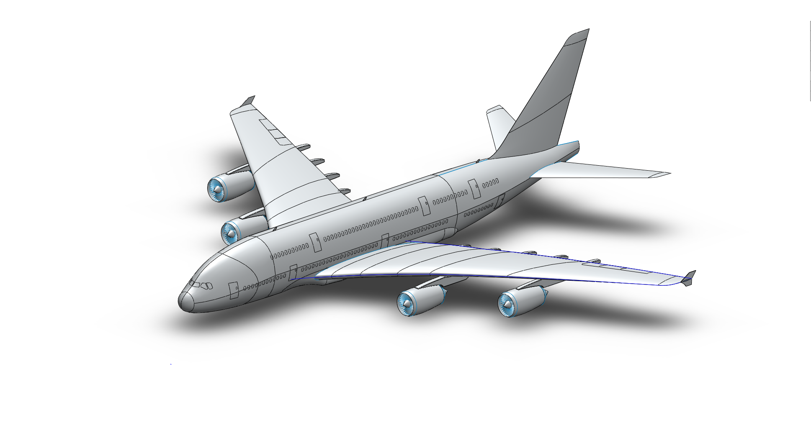
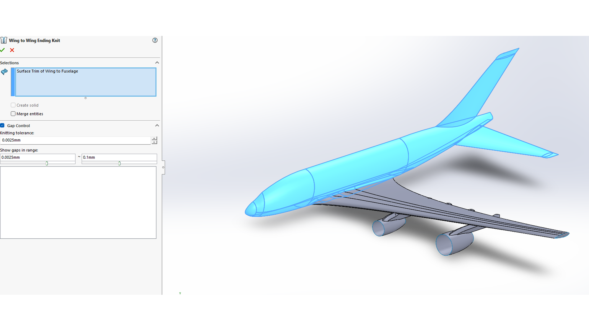
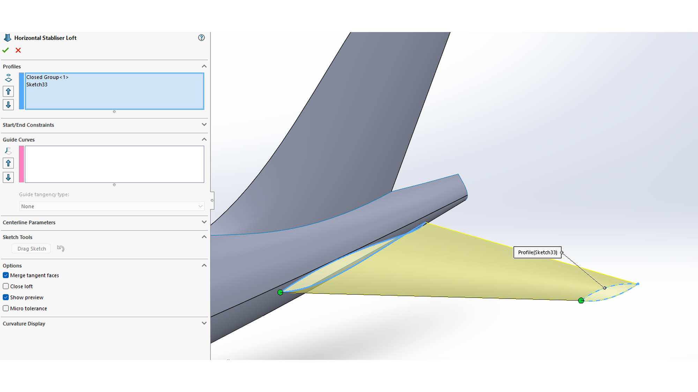
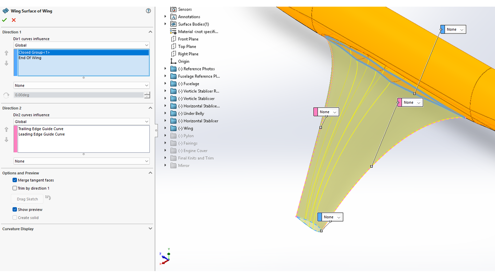
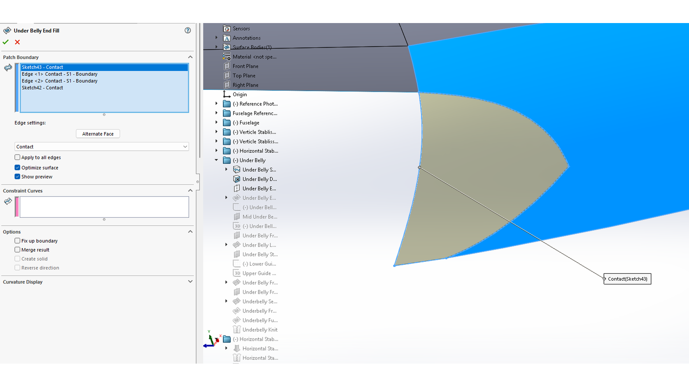
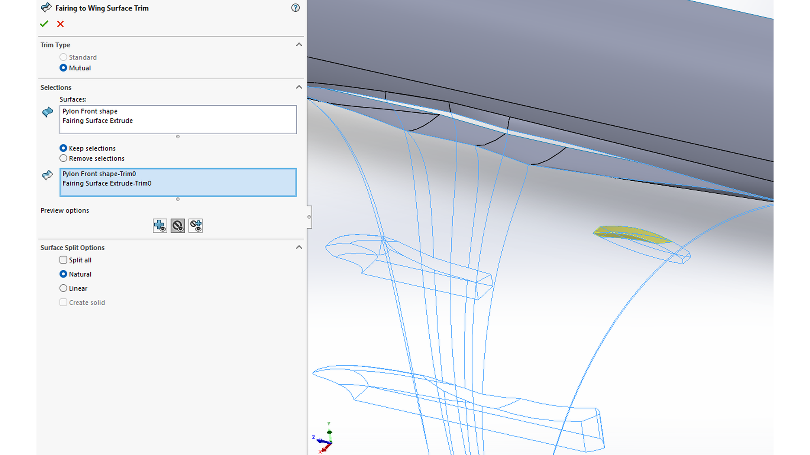

A380 Surface Modelling
An advanced CAD project focused on creating and refining an aircraft surface model using SolidWorks surfacing tools. The work explored lofted, boundary, filled, trimmed, knit, and split-line surface workflows to model complex aerospace geometry and improve understanding of freeform surface modelling methods.
Project Overview
This project investigated SolidWorks as a freeform surface modelling system and applied its surfacing tools to an aircraft model. The aim was to understand how complex curved geometry can be created, refined, and joined into a clean surface model suitable for aerospace-style forms.
Objective
The objective was to evaluate the requirements of a good surface modelling system, compare SolidWorks with other CAD tools, and demonstrate practical use of SolidWorks surfacing features on complex aircraft geometry.
Interactive 3D Preview
Rotate, zoom, and inspect the simplified A380 surface model directly in the browser.

Surface Modelling Requirements
- Ability to handle simple and complex surface geometries.
- Mathematical precision for accurate engineering models.
- Curvature continuity for high-quality transitions between surfaces.
- A clear user interface that supports both new and experienced users.
- Scalability for larger models and more complex geometry.
SolidWorks Evaluation
SolidWorks was assessed against key freeform modelling criteria. The report found that SolidWorks provides a strong balance of usability, accuracy, and practical tool availability for most engineering surface modelling tasks, especially where feature history and engineering workflows are important.
Software Comparison
SolidWorks was compared with CATIA, Fusion 360, AutoCAD, and Rhino. CATIA and Rhino were identified as stronger for very advanced or highly specialised surface modelling, while SolidWorks remained a practical and accessible option for engineering-focused CAD work.

Tools Applied
- Lofted Surface: used to create transitions between different profiles and changing cross-sections.
- Boundary Surface: used to create controlled surfaces curved in two directions.
- Filled Surface: used to patch or close gaps between existing edges.
- Trim Surface: used to remove unwanted intersecting surface regions and clean the model.
- Knit Surface: used to combine multiple surfaces into a connected surface body.
- Split Line: used to divide surfaces into separate regions for local control and feature placement.


Geometry Refinement
Refinement tools were used to clean and organise the model after surface creation. Trimmed surfaces helped remove unwanted geometry, while knit surfaces helped combine separate surface bodies into a more complete aircraft form. Split lines provided extra control over specific regions without changing the underlying surface shape.
Theory Used
The theoretical section reviewed NURBS modelling and geometric continuity. NURBS were identified as the mathematical basis for accurate freeform curves and surfaces, while G0, G1, and G2 continuity explained how surfaces connect with positional, tangent, or curvature smoothness.


Skills Demonstrated
- Advanced SolidWorks surface modelling workflow.
- Use of lofted, boundary, filled, trimmed, knit, and split-line surface tools.
- Understanding of surface continuity and smooth aerospace geometry.
- Comparison of CAD systems for engineering surface modelling.
- Application of NURBS and continuity theory to CAD modelling decisions.
- Model refinement and troubleshooting of complex surface geometry.
Reflection
This project strengthened my understanding of the difference between solid modelling and surface modelling. Aircraft geometry contains many smooth, curved, and blended forms, so surface modelling tools are important for achieving shapes that would be difficult to produce using basic solid features alone.
The most useful part of the project was learning how different surfacing tools support different modelling problems. Lofted and boundary surfaces were useful for creating the main freeform geometry, while trimming, knitting, and split lines were important for refining the model and controlling local regions.
The project also highlighted the importance of surface quality and continuity in aerospace design. Smooth transitions are not only visually important; they also matter for aerodynamic surfaces where abrupt changes can affect airflow. Overall, the project improved my confidence with advanced CAD workflows and gave me a clearer understanding of how complex aircraft-style surfaces can be built and refined in SolidWorks.